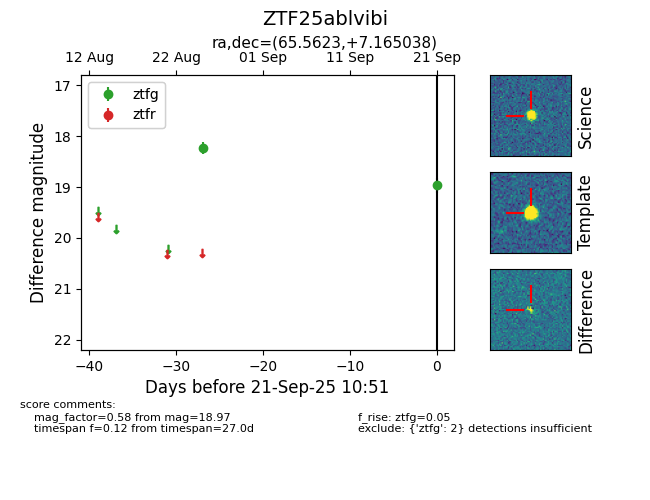

FINK: ZTF25ablvibi
Lasair: ZTF25ablvibi
ALeRCE: ZTF25ablvibi
ZTF25ablvibi (ztf,fink)
equatorial (ra, dec) = (65.5623,+7.16504)
galactic (l, b) = (186.9209,-28.56806)

last ztfg=18.97
2 ztfg detections